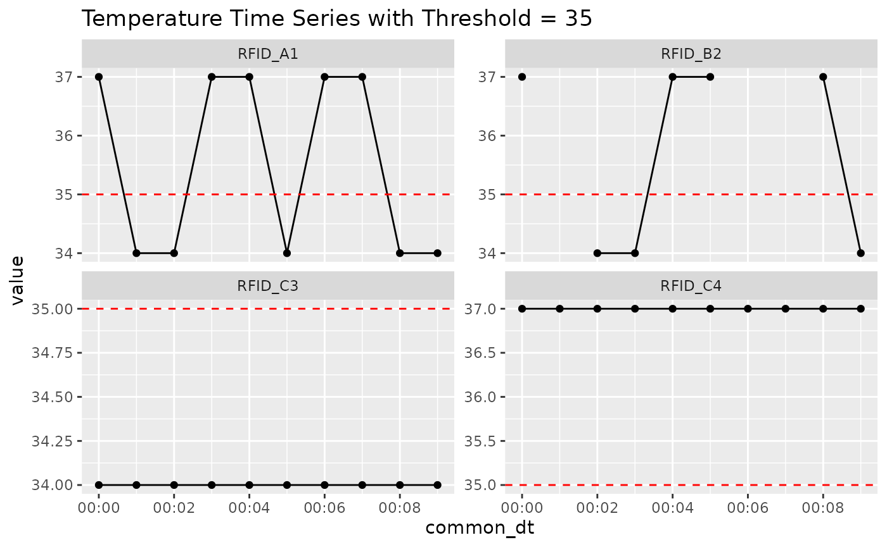

Understanding Bout Detection and Duration Calculation
Source:vignettes/bout_duration_vignette.Rmd
bout_duration_vignette.Rmd
library(dplyr)
#>
#> Attaching package: 'dplyr'
#> The following objects are masked from 'package:stats':
#>
#> filter, lag
#> The following objects are masked from 'package:base':
#>
#> intersect, setdiff, setequal, union
library(ggplot2)
library(tidyr)
library(uid)Overview
This vignette illustrates how the quantify_temp_bouts()
function detects and summarizes bouts where temperature is above or
below a threshold. We’ll highlight how different parameter choices
affect the outcome, particularly:
-
duration_mode = "strict"vs"inclusive" drop_single_point_boutsfill_undetected_groups
We’ll use a toy dataset with simulated temperature values across multiple animals.
Simulated Example Data
In this section, we define a small, handcrafted dataset with temperature readings for four animals (rfids), collected at 1-minute intervals. This toy dataset includes:
Normal temperatures (above threshold)
Brief dips below threshold
NAs to simulate missing data
One animal with all values below threshold (C3)
One animal with all values above threshold (C4)
This dataset is small enough to visually inspect but rich enough to demonstrate how quantify_temp_bouts() behaves under different scenarios.
rfids <- c("RFID_A1", "RFID_B2", "RFID_C3", "RFID_C4")
n <- 10
df <- expand_grid(
rfid = rfids,
common_dt = seq.POSIXt(
as.POSIXct("2025-01-01 00:00:00"),
by = "1 min",
length.out = n
)
) %>%
mutate(
session_name = "sample_session",
variable = "temperature",
value = c(
37, 34, 34, 37, 37, 34, 37, 37, 34, 34, # A1
37, NA, 34, 34, 37, 37, NA, NA, 37, 34, # B2
rep(34, 10), # C3 (all below)
rep(37, 10) # C4 (all above)
)
) %>%
group_by(rfid)Visualizing Threshold Behavior
Something that we always forget is that all “continuous” variables
are recorded at a certain interval and they are in a very real sense
discrete (read NA might be present,
sampling_interval and edge cases matter).
Before diving into bout quantification, it’s helpful to visualize the raw temperature traces with a threshold line at 35°C. This helps us anticipate where bouts are expected to occur.
Look for dips below the red dashed line — these are potential bouts when direction = “below”.
You’ll see that RFID_A1 and RFID_B2 have scattered dips, RFID_C3 is always below, and RFID_C4 never dips.
This plot provides visual ground truth for the subsequent examples.
p <- df %>%
ggplot(aes(x = common_dt, y = value)) +
geom_line() +
geom_point() +
geom_hline(yintercept = 35, linetype = "dashed", color = "red") +
facet_wrap(~rfid, scales = "free_y") +
labs(title = "Temperature Time Series with Threshold = 35")
p
#> Warning: Removed 3 rows containing missing values or values outside the scale range
#> (`geom_point()`).
Example 1: duration_mode = "strict"
Here we compute bouts using duration_mode = “strict”, which calculates bout duration as end - start.
This means that bouts made of a single timepoint have a duration of zero minutes.
This mode is useful when you want to analyze exact bout spans without assuming any time extends beyond the sampled timestamps.
Look closely at the output — you’ll notice several bouts with duration_minutes == 0.
strict_bouts <- quantify_temp_bouts(
df,
threshold = 35,
sampling_interval = 1,
duration_mode = "strict"
)
strict_bouts
#> # A tibble: 7 × 4
#> # Groups: rfid [4]
#> rfid start end duration_minutes
#> <chr> <dttm> <dttm> <dbl>
#> 1 RFID_A1 2025-01-01 00:01:00 2025-01-01 00:02:00 1
#> 2 RFID_A1 2025-01-01 00:05:00 2025-01-01 00:05:00 0
#> 3 RFID_A1 2025-01-01 00:08:00 2025-01-01 00:09:00 1
#> 4 RFID_B2 2025-01-01 00:02:00 2025-01-01 00:03:00 1
#> 5 RFID_B2 2025-01-01 00:09:00 2025-01-01 00:09:00 0
#> 6 RFID_C3 2025-01-01 00:00:00 2025-01-01 00:09:00 9
#> 7 RFID_C4 NA NA 0Example 2: duration_mode = "inclusive"
Now we run the same bout detection, but using duration_mode = “inclusive”, which adds the sampling_interval to the duration.
This assumes each temperature sample represents the entire interval that follows it.
For example, a single timepoint becomes a 1-minute bout if sampling_interval = 1.
The merged table shows a direct comparison of strict vs inclusive durations. You’ll see that every inclusive value is equal to or greater than its strict counterpart.
inclusive_bouts <- quantify_temp_bouts(
df,
threshold = 35,
sampling_interval = 1,
duration_mode = "inclusive"
)
inclusive_bouts
#> # A tibble: 7 × 4
#> # Groups: rfid [4]
#> rfid start end duration_minutes
#> <chr> <dttm> <dttm> <dbl>
#> 1 RFID_A1 2025-01-01 00:01:00 2025-01-01 00:02:00 2
#> 2 RFID_A1 2025-01-01 00:05:00 2025-01-01 00:05:00 1
#> 3 RFID_A1 2025-01-01 00:08:00 2025-01-01 00:09:00 2
#> 4 RFID_B2 2025-01-01 00:02:00 2025-01-01 00:03:00 2
#> 5 RFID_B2 2025-01-01 00:09:00 2025-01-01 00:09:00 1
#> 6 RFID_C3 2025-01-01 00:00:00 2025-01-01 00:09:00 10
#> 7 RFID_C4 NA NA 0
merge_comp <- left_join(
strict_bouts,
inclusive_bouts,
by = c("rfid", "start", "end"),
suffix = c("_strict", "_inclusive")
)
merge_comp %>%
select(rfid, start, end, duration_minutes_strict, duration_minutes_inclusive)
#> # A tibble: 7 × 5
#> # Groups: rfid [4]
#> rfid start end duration_minutes_strict
#> <chr> <dttm> <dttm> <dbl>
#> 1 RFID_A1 2025-01-01 00:01:00 2025-01-01 00:02:00 1
#> 2 RFID_A1 2025-01-01 00:05:00 2025-01-01 00:05:00 0
#> 3 RFID_A1 2025-01-01 00:08:00 2025-01-01 00:09:00 1
#> 4 RFID_B2 2025-01-01 00:02:00 2025-01-01 00:03:00 1
#> 5 RFID_B2 2025-01-01 00:09:00 2025-01-01 00:09:00 0
#> 6 RFID_C3 2025-01-01 00:00:00 2025-01-01 00:09:00 9
#> 7 RFID_C4 NA NA 0
#> # ℹ 1 more variable: duration_minutes_inclusive <dbl>Example 3: Dropping single-point bouts
Here we test drop_single_point_bouts = TRUE, which removes any bout whose duration would be zero in “strict” mode.
This is helpful if you want to ignore brief threshold crossings or noise artifacts.
Important: this does not remove animals that had no bouts — only single-point bouts.
Compare this output to the one from Example 1 to see which rows were removed.
drop_1pt <- quantify_temp_bouts(
df,
threshold = 35,
sampling_interval = 1,
duration_mode = "strict",
drop_single_point_bouts = TRUE
)
drop_1pt
#> # A tibble: 5 × 4
#> # Groups: rfid [4]
#> rfid start end duration_minutes
#> <chr> <dttm> <dttm> <dbl>
#> 1 RFID_A1 2025-01-01 00:01:00 2025-01-01 00:02:00 1
#> 2 RFID_A1 2025-01-01 00:08:00 2025-01-01 00:09:00 1
#> 3 RFID_B2 2025-01-01 00:02:00 2025-01-01 00:03:00 1
#> 4 RFID_C3 2025-01-01 00:00:00 2025-01-01 00:09:00 9
#> 5 RFID_C4 NA NA 0Example 4: Filling undetected groups
In this final example, we explore what happens when an animal has no bouts at all.
When fill_undetected_groups = TRUE, such animals are
still included in the output, with
duration_minutes = 0.
When `fill_undetected_groups = FALSE, they are completely excluded from the result.
This is especially useful for statistical modeling or reporting where you want to include all animals in the denominator, even if they didn’t show any bouts.
filled <- quantify_temp_bouts(
df,
threshold = 20, # no values below this threshold
fill_undetected_groups = TRUE
)
#> Warning: There were 2 warnings in `dplyr::summarise()`.
#> The first warning was:
#> ℹ In argument: `start = min(common_dt)`.
#> Caused by warning in `min.default()`:
#> ! no non-missing arguments to min; returning Inf
#> ℹ Run `dplyr::last_dplyr_warnings()` to see the 1 remaining warning.
filled
#> # A tibble: 4 × 4
#> # Groups: rfid [4]
#> rfid start end duration_minutes
#> <chr> <dttm> <dttm> <dbl>
#> 1 RFID_A1 NA NA 0
#> 2 RFID_B2 NA NA 0
#> 3 RFID_C3 NA NA 0
#> 4 RFID_C4 NA NA 0
empty <- quantify_temp_bouts(
df,
threshold = 20,
fill_undetected_groups = FALSE
)
#> Warning: There were 2 warnings in `dplyr::summarise()`.
#> The first warning was:
#> ℹ In argument: `start = min(common_dt)`.
#> Caused by warning in `min.default()`:
#> ! no non-missing arguments to min; returning Inf
#> ℹ Run `dplyr::last_dplyr_warnings()` to see the 1 remaining warning.
empty
#> # A tibble: 0 × 5
#> # ℹ 5 variables: rfid <chr>, run_id <int>, start <dttm>, end <dttm>,
#> # duration_minutes <dbl>Summary Table of Options
| Parameter | Description |
|---|---|
duration_mode |
"strict" = end - start,
"inclusive" = end - start + interval
|
drop_single_point_bouts |
Excludes bouts where start == end (duration = 0) |
fill_undetected_groups |
Inserts duration = 0 for groups with no detected
bouts |
Recommendations
- The use of
strictorinclusivemode depends on your criteria for how long a bout should last and what should be counted. - Single-point bouts (and very very short bouts!) might be returned, so you might need to filter your data.
- Fill undetected groups for complete modeling or plotting datasets (it’s often the case that we want to keep true zeros in the dataset).